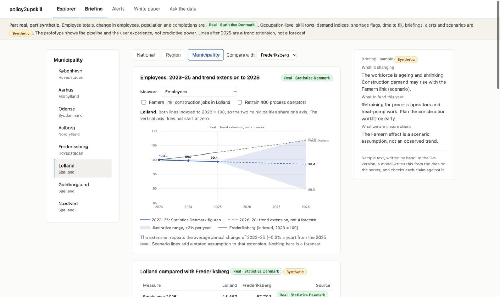
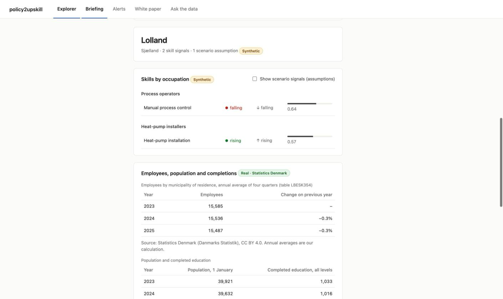
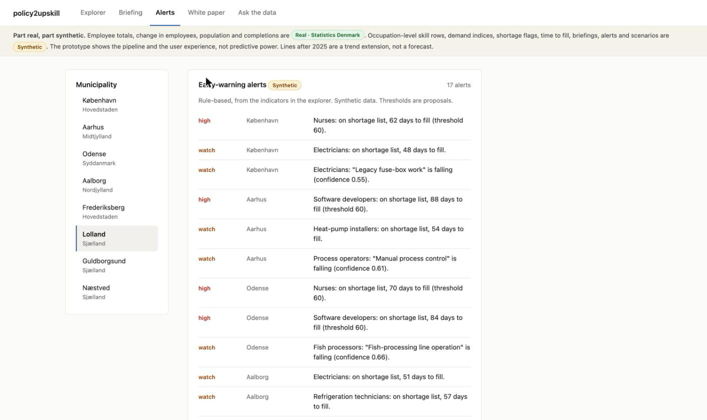
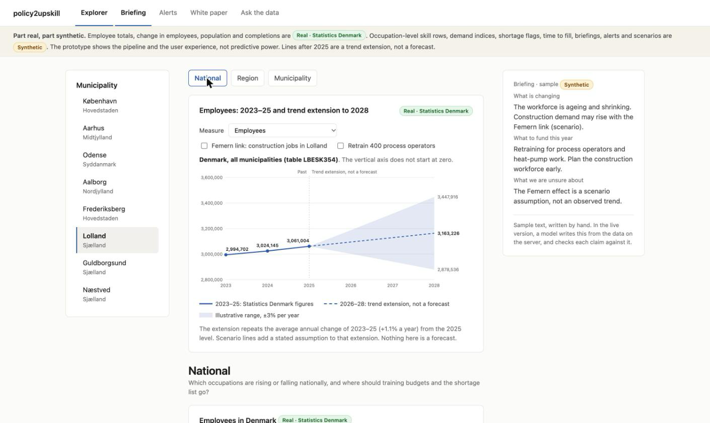
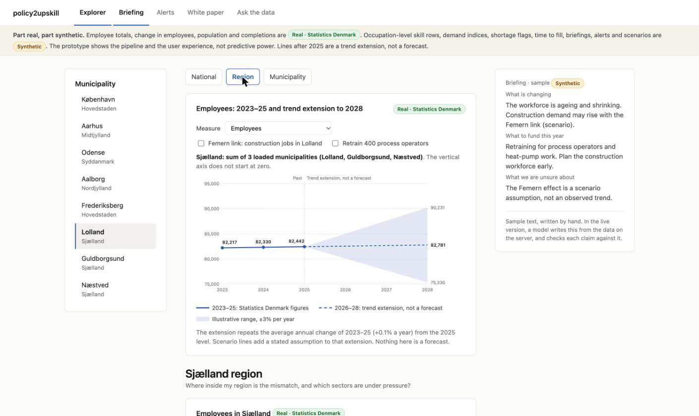
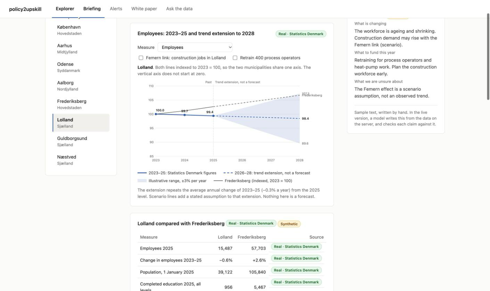
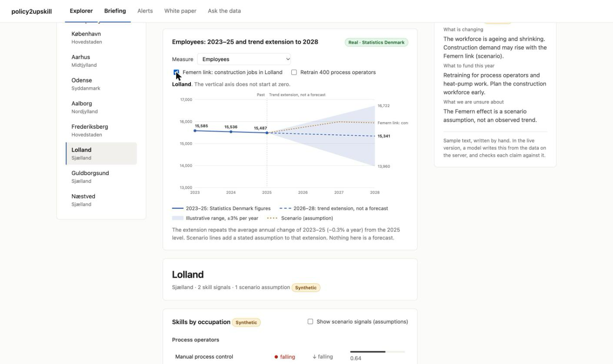
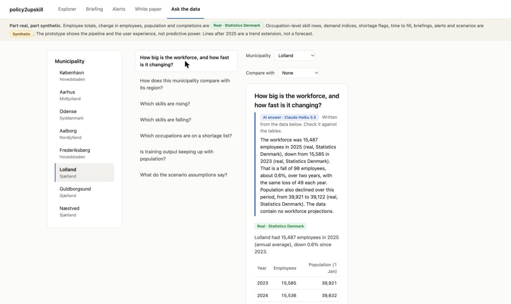

A Danish labour-market explorer for policy makers. It shows how employment moves, and which occupation skills are rising or falling.

Which occupations and skills are rising or falling, municipality by municipality? Built for Danish policy makers.
Alerts point to the occupations worth a closer look. Skill rows and alerts are synthetic in this demo.


National: all of Denmark, from Statistics Denmark employee counts.
Region: Sjælland, built from the municipalities loaded so far. Switch level with one click.
Municipality: one place at a time, with its skills and its own chart.


Lolland against Frederiksberg, both indexed to 2023 = 100. The solid line is Statistics Denmark data to 2025.
Dashed blue: a trend extension, not a forecast. Orange dotted: the Femern scenario, an assumption.


Femern link: scenario switched onEvery panel carries a badge, so you can see what is measured and what is made up.
Pick a question about a municipality. A language model writes the answer from the tables on screen.
The Real badge marks figures from Statistics Denmark. Check each answer against the table.

Predictive claims wait for the backtest.
Score the method on past years before anyone relies on it.
The Statistics Denmark table has no occupation field, so occupation trends still need a source.
Map them and close them, starting with occupation-level data.